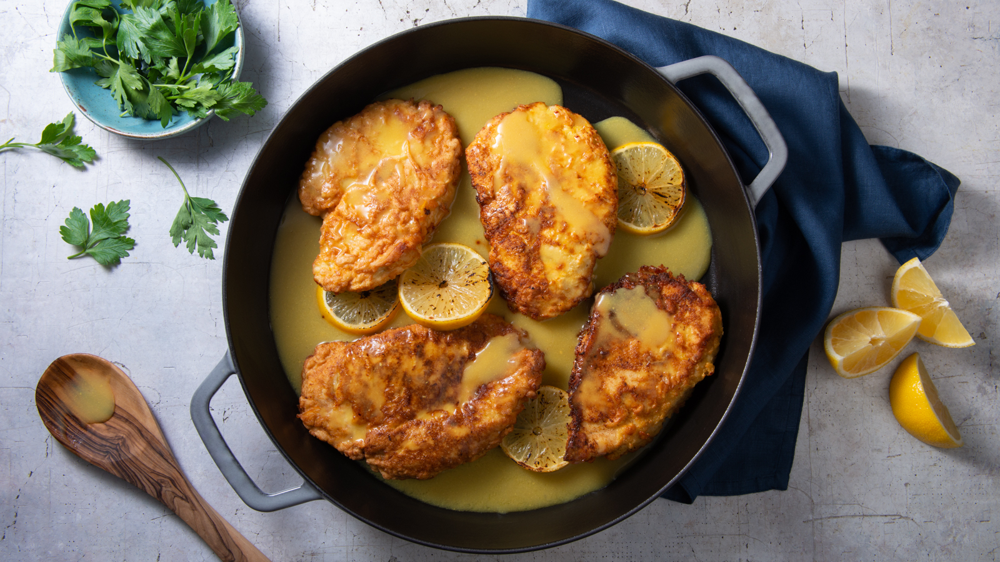

-

Chicken Francese
Ingredients
- Chicken Breasts - 4, large, skinless, boneless
- Milk - 1 cup
- Breadcrumbs - 1 cup
- Cheese - 1 cup
- Spring Onion - 2 tablespoons
- Olive Oil - 1 cup
- Butter - 1 teaspoon
- Salt and Black Pepper
- Lemon - 1
- White Wine - 1 cup
- Chicken Broth - 1 cup
- Lemon Juice - 1 cup
- Orange Juice - 3 tablespoons
- Honey - 3 tablespoons
Method of Preparation
Make a brandy of orange juice and honey. Pound chicken breasts into 1/4 inch thickness. Place in a bowl and pour in milk. Soak for 30 minutes.
Pour breadcrumbs, cheese and spring onion into a flat plate or bowl and mix. Take the breasts and cover with mixture.
In a pan, add olive oil and fry for 2-3 minutes on each side. Lightly butter a pan and place the fried breasts in it. Reserve 1 tablespoon of oil. Sprinkle the breasts with salt and pepper. Chop a lemon and place on top of each breast
In a pan, add the reserved olive oil, and white wine and allow to boil. Add in chicken broth and lemon juice. Boil for 5-10 minutes till reduced by half. Pour on the breasts and pour the brandy to taste.
Bake at 350°F for 20-25 minutes. Serve with spaghetti or rice